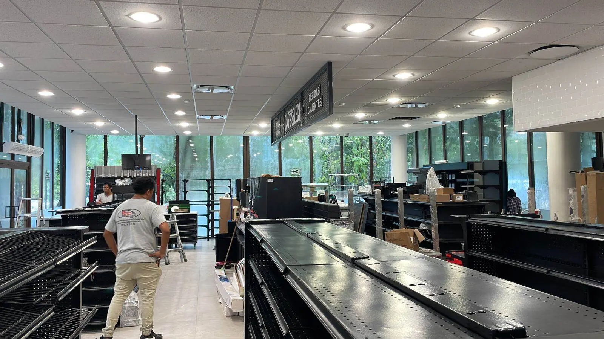

Most rental companies at Cancún airport work off-airport: a shuttle takes the client to a branch on the airport road with the office, the car lot and the wash bays. At the new Tulum airport the same model is just starting. We build the whole branch: office and counter, paved and lit car lot, wash and prep bays, light workshop and shuttle bay.

Customer counter, waiting area, restrooms and back office.
Paved, drained and lit lot with marked bays for the fleet.
Wash bays with water recycling and a prep line.
Tyres, fluids and quick repairs on site.
Covered pick-up and drop-off for the airport shuttle.
Chargers for the electric fleet.
Cancún International (CUN) is the busiest airport in the Mexican Caribbean, with four passenger terminals, run by ASUR, south of the city along Highway 307, and with its own Tren Maya station. Tulum International “Felipe Carrillo Puerto” (TQO) opened in December 2023 south of Tulum town, also next to Highway 307 and the Tren Maya, and it is turning empty jungle frontage into commercial land. Cozumel (CZM) and Chetumal (CTM) are smaller, but follow the same pattern: every airport pulls parking, rental cars, logistics, fuel, hotels and housing for the people who work there.
Land inside the airport fence belongs to the airport operator and is built under its contracts and rules; most private projects sit outside the fence, along the access roads and Highway 307. There, three things are checked before buying or designing: the municipal land use and density (PDU), the height allowed under the airport’s obstacle limitation surfaces (AFAC), and access from the federal highway, which needs its own permit for a new entrance.
| Item | Price (MXN) |
|---|---|
| Car-lot paving | $800–$1,600 / m² |
| Office and counter | $8,000–$18,000 / m² |
| Wash bays, workshop, shade | Per project |
See also: Commercial construction · Parking lots in Cancún
Airport cluster: Construction near the airports · Park & fly parking lots · Airport hotels · Airport logistics warehouses · Rental apartments near the airport · Gas stations near the airport · Private aviation hangars · Building near Tulum airport · AFAC height limits near airports
Send the lot and the idea; we check land use, height and access, and send a budget range. Reply in 2 minutes.
Quote on WhatsAppFideicomiso: how foreigners own coastal property · Buying land in Mexico: due diligence · Concierge construction service · Managing a build from abroad · Build or buy in Playa del Carmen? · How long a build takes in Mexico · Contractor stopped? Finishing a stalled build · Closing on property: process and costs · Where to build: area by area · Cost to build a house in Mexico · Land use, COS and CUS · Soils studies on limestone
Your review helps other owners decide, and helps us improve.
Write a reviewRead our Google reviews